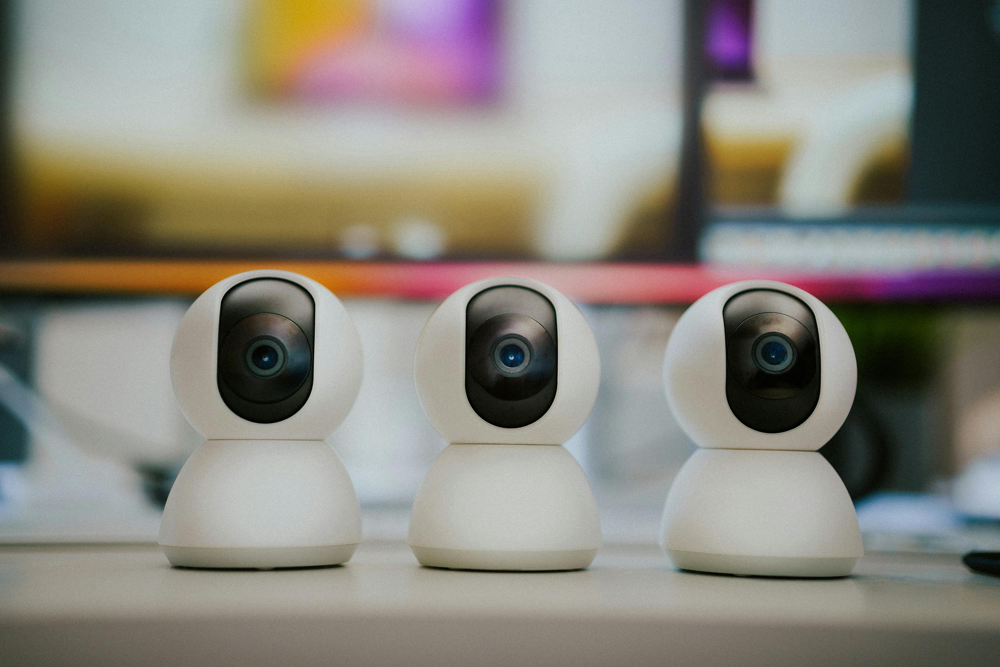
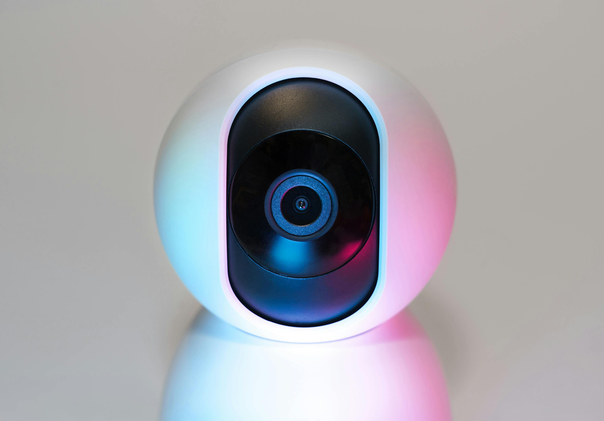
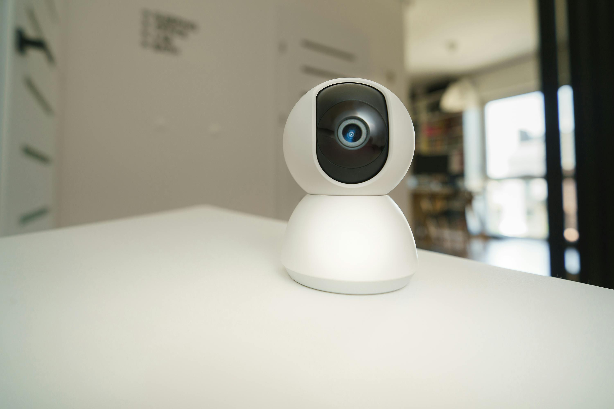

IP Camera CCTV: Cara Kerja, Kelebihan dan Kekurangan
IP camera CCTV adalah salah satu jenis kamera pengawas yang umum digunakan saat ini. Hanya saja, jenis kamera pengawas itu memiliki cara kerja dan fitur yang sedikit berbeda dengan CCTV biasa.
CCTV atau atau Closed Circuit Television merupakan perangkat kamera yang diciptakan untuk tujuan keamanan. Perangkat ini mempunyai beragam jenis, kualitas, dan harga.
Keberadaan CCTV terbilang sangat membantu bagi orang yang memiliki mobilitas tinggi dalam waktu lama. Dengan mengandalkan teknologi berupa CCTV, siapa pun dapat meningkatkan kewaspadaan dari berbagai hal yang tak diinginkan.
Lantas, apa bedanya CCTV biasa dengan IP camera CCTV? Simak pembahasan selengkapnya berikut ini.
Apa Sih IP Camera CCTV Itu?
IP camera atau Internet Protocol camera adalah jenis kamera keamanan digital yang menerima dan mengirim rekaman video melalui jaringan IP.
Dijelaskan oleh Bay Alarm, IP camera tak membutuhkan alat perekam lokal layaknya CCTV biasa. Sebab, IP camera CCTV hanya mengandalkan jaringan lokal.
IP camera akan terhubung ke jaringan dengan cara yang sama seperti ponsel, komputer, laptop, tablet, maupun printer. Dari segi kualitas, IP camera CCTV menawarkan footage yang lebih jernih dengan resolusi mencapai 16MP. Namun, itu bergantung pada model kamera yang digunakan.
Cara Kerja IP Camera CCTV
Menurut Safesite Facilities, sistem kerja IP camera CCTV sebenarnya tak jauh berbeda dengan kamera digital. Jenis kamera keamanan yang satu ini akan memampatkan file yang nantinya dikirim melalui jaringan. IP camera CCTV dapat menggunakan jaringan kabel yang terhubung melalui kabel ethernet ke modem atau ruter broadband. Selain itu, IP camera juga bisa bekerja secara nirkabel melalui ruter Wi-Fi.

Untuk memasang jenis kamera pengawas ini tak perlu langkah yang sulit. Kamu hanya perlu menyiapkan koneksi jaringan dan menentukan lokasi kemudian mengonfigurasi kamera.
Sebagian besar IP camera CCTV dapat dikonfigurasi sesuai kebutuhan. Mulai dari memberikan tayangan langsung, melakukan perekaman berkelanjutan, hingga beroperasi pada waktu yang dijadwalkan.
Kelebihan IP Camera CCTV
- Kualitas Video yang Tinggi
CCTV IP memiliki kualitas video yang lebih tinggi dibandingkan dengan kamera CCTV Analog tradisional. Resolusi tinggi dan fitur-fitur kamera canggih memberikan gambar yang jernih dan tajam sehingga gambar yang dihasilkan sangat detail. CCTV IP jenis tertentu memiliki ketajaman gambar bahkan di tempat yang minim pencahayaan.
- Intsalasi yang Mudah
Selain memiliki footage yang lebih jernih, CCTV IP juga mudah diinstalasi. Dengan menggunakan koneksi jaringan, Anda dapat menghubungkan kamera ke jaringan yang sudah ada atau menggunakan kabel Ethernet untuk mentransmisikan data. Tentunya ini sebuah keuntungan karna Anda dapat menghemat waktu.
- Skalabilitas
Sistem CCTV IP memiliki kemampuan scalable sehingga mudah diperluas dengan menambahkan lebih banyak kamera ke jaringan yang sama. Ini memungkinkan Anda untuk mengadaptasi sistem sesuai dengan kebutuhan keamanan Anda.
- Bisa Diakses Jarak Jauh
CCTV IP menjawab kebutuhan pengguna. Pasalnya Anda dapat mengakses video dari kamera CCTV IP dari mana saja melalui internet. Dengan aplikasi mobile atau perangkat komputer, Anda dapat memantau properti Anda secara real-time, bahkan saat sedang bepergian. Aplikasi mobile yang ditawarkan juga user friendly sehingga anda tidak kesulitan dalam mengoperasikannya.
- Fitur yang Canggih
CCTV IP sering dilengkapi dengan fitur canggih seperti deteksi gerakan, pengenalan wajah, dan analisis video. Fitur ini dapat meningkatkan efisiensi pemantauan dan memberikan keamanan yang lebih baik. Bahkan beberapa merk CCTV seperti Provision-ISR menyediakan fitur people counting (menghitung jumlah orang) yang dapat merekap laporan kunjungan perhari, perbulan sehingga sangat membantu perusahaan dalam menganalisa jumlah kunjungan tamu atau pelanggan.
Kekurangan IP Camera CCTV
-
Harga yang Lebih Mahal
Harga CCTV IP seringkali lebih mahal dibandingkan dengan sistem analog tradisional. Hal ini disebabkan oleh tingginya harga perangkat keras dan perangkat lunak.
-
Ketergantungan Pada Jaringan
Sistem CCTV IP membutuhkan jaringan yang stabil dan andal. Jika terjadi gangguan jaringan,akan mempengaruhi perekaman CCTV IP, ini membuat kamera menjadi tidak berfungsi dengan baik atau perekaman video terputus. Untuk itu perlu adanya backup daya dan data sehingga sewaktu-waktu jaringan tidak stabil, kamera cctv tidak kehilangan perekaman video.
-
Keamanan Jaringan
CCTV IP sangat rentan terhadap potensi ancaman keamanan siber karna terhubung ke jaringan internet. Untuk itu, perlunya upaya yang baik dalam menjaga keamanan jaringan untuk mencegah akses tidak sah dan kebocoran data perekaman video. Berbagai merk cctv mengklaim perangkatnya memiliki keamanan anti cyber security. Namun, keamanan cyber security yang dimaksud hanya terletak di server.
-
Konfigurasi Lebih Sulit
Konfigurasi dan pengaturan sistem CCTV IP memerlukan pengetahuan teknis yang lebih mendalam daripada sistem CCTV Analog tradisional. Ini dapat menimbulkan tantangan bagi mereka yang kurang berpengalaman dalam pengaturan jaringan. Kesalahan dalam proses konfigurasi dapat merusak perangkat dalam jangka waktu lama. Untuk itu perlunya tenaga ahli profesional yang telah berpengalaman menginstalasi sistem CCTV IP.
IP Camera CCTV menawarkan keunggulan dalam kualitas video, akses jarak jauh, fitur canggih, dan kemudahan instalasi dibandingkan CCTV biasa. Namun, harganya lebih mahal, bergantung pada jaringan, rentan terhadap ancaman siber, dan memerlukan konfigurasi teknis yang kompleks.
Dengan berbagai kelebihan dan kekurangannya, IP Camera CCTV cocok digunakan untuk kebutuhan pengawasan modern yang memprioritaskan kualitas, fleksibilitas, dan akses jarak jauh. Namun, penting untuk mempertimbangkan kesiapan infrastruktur jaringan dan anggaran sebelum memilih jenis kamera ini.